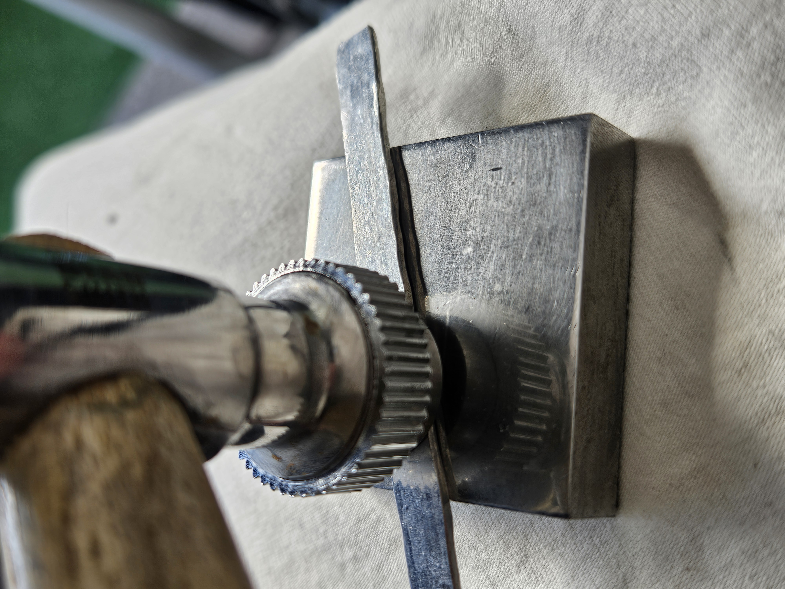
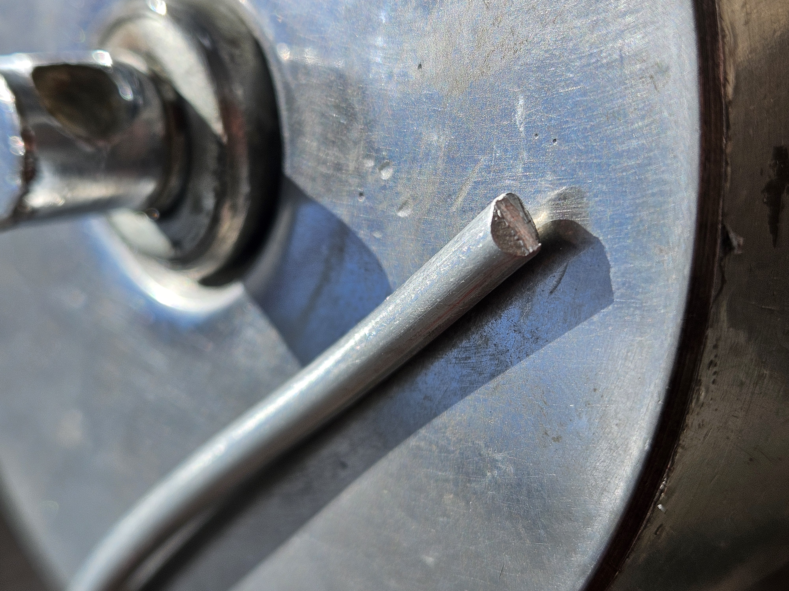
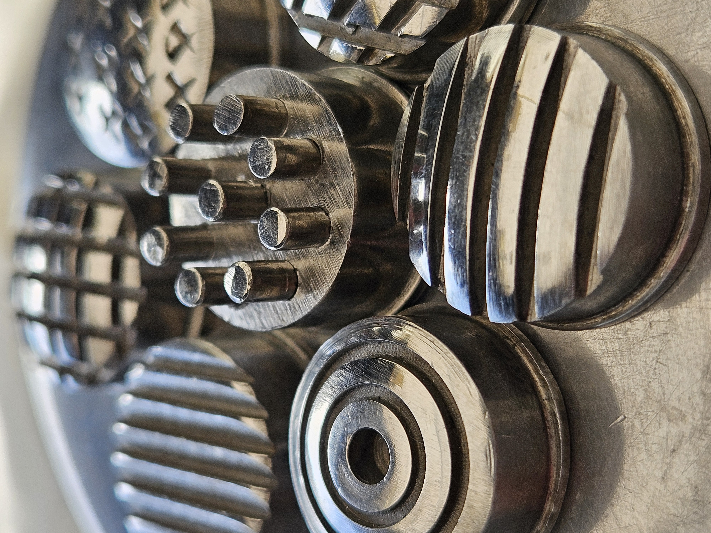

01 / Ausgangspunkt
Material
Am Anfang steht Aluminium als ruhige, noch unbestimmte Fläche. Dicke, Härte und Größe entscheiden mit darüber, was später überhaupt möglich ist.

02 — Prozess
Die Oberfläche entsteht nicht am Ende als Dekoration. Sie wächst während der Bearbeitung direkt aus dem Material — durch Form, Druck, Schlag, Abrieb und Finish.
Am Anfang steht Aluminium als ruhige, noch unbestimmte Fläche. Dicke, Härte und Größe entscheiden mit darüber, was später überhaupt möglich ist.
Schneiden, biegen, treiben und anpassen geben dem Stück seine Geometrie. Ring, Anhänger oder Objekt entstehen direkt am Werkstück — nicht aus einer beliebig reproduzierten Form.

Jetzt bekommt das Stück seine eigentliche Sprache. Linien, Brüche, Verdichtungen und Abrieb werden nicht aufgetragen, sondern in das Aluminium gearbeitet. Kleine Abweichungen gehören dazu.

Mattieren, Bürsten und Polieren verändern nicht nur den Glanz. Das Finish entscheidet, welche Kanten Licht fangen, welche Vertiefungen dunkel bleiben und wie stark die Struktur im Alltag sichtbar wird.

Am Ende steht kein perfektes Duplikat. Die Grundidee kann wiederkehren, aber Werkzeugspur, Lichtkante und kleine Unterschiede machen jedes Stück zu einer eigenen Ausführung.
Aktuelle Stücke ansehen →
Der entscheidende Punkt
Nicht aufgemalt.
Eingearbeitet.